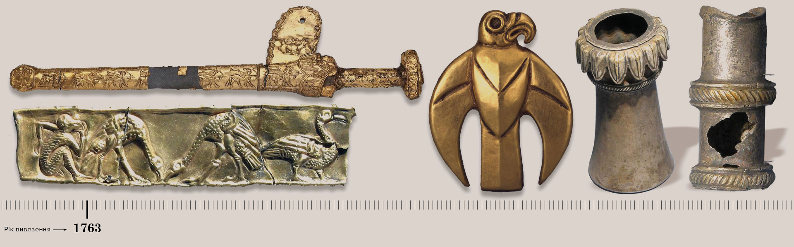
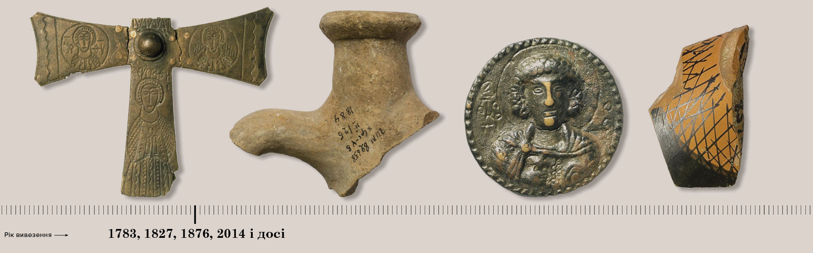
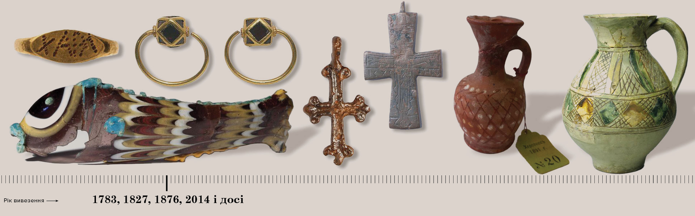
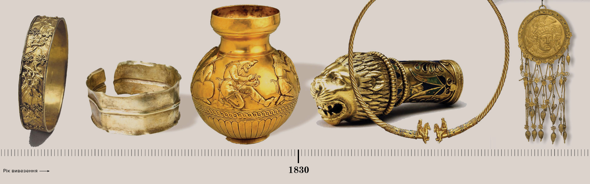
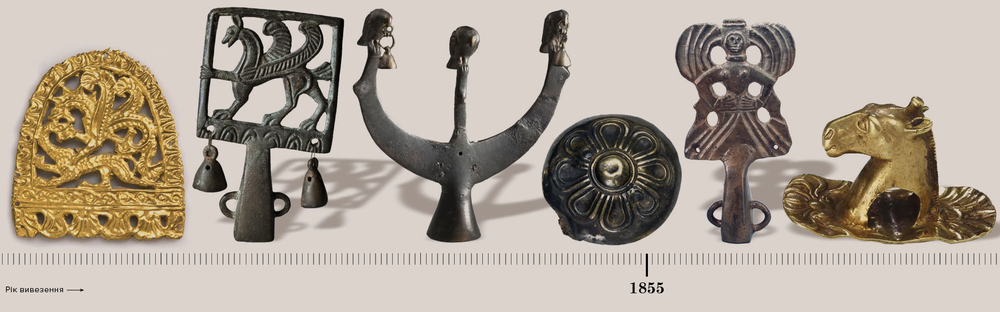
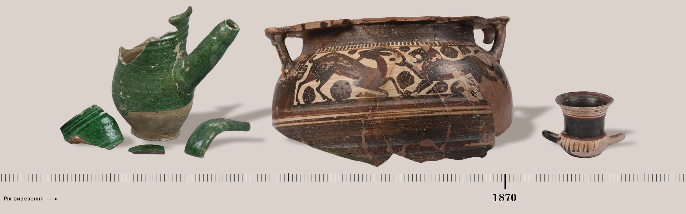
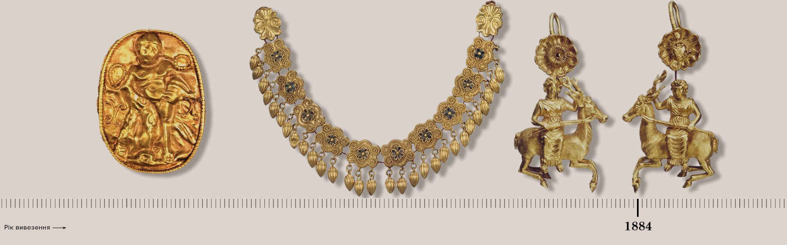
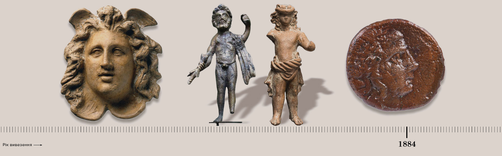
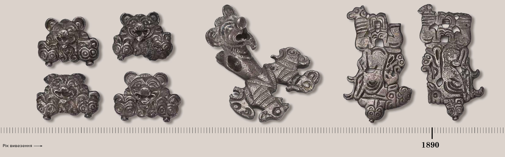
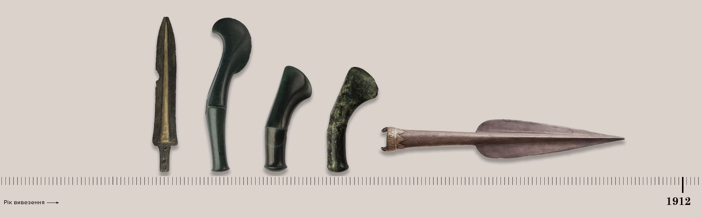

У двох російських музеях ми виявили 110 тис. археологічних знахідок з України
В онлайн-колекціях Ермітажу та Державного історичного музею Росії ТЕКСТИ виявили 110 тис. археологічних
знахідок, які в різні історичні періоди було вивезено з території сучасної України до Росії. Здебільшого їх
вивозили до Росії до проголошення Незалежності, хоча є й винятки.
Ми не шукали мистецьких творів, ікон і зброї, бо їх походження вкрай важко ідентифікувати. Пограбування під
час нинішньої війни також не досліджували. Додатково лише розглянули російські трюки з приховування
найцінніших об'єктів.
Одразу зазначимо, що більшість артефактів не вражають — насамперед це частини давньої кераміки, знарядь праці
тощо. Проте є і справжні неоціненні коштовності з золота та дорогоцінних каменів.
Вивезені знахідки покликані продемонструвати не тільки міфічний зв’язок сучасної Росії з Руссю, а й глибоке
історичне коріння росіян, які намагаються привласнити навіть прадавню історію України, епоху палеоліту,
трипільську культуру, античну та скіфську добу.
Сакральне значення
Вишгородська ікона Божої матері, яку нині називають “Богоматерь Владимирская”, перебуває у Третьяковській
галереї в Москві. Її вважають основною православною реліквією Росії.
Ікону в 1155 році під час нападу на Київ з напівзруйнованого Вишгорода вивіз володимиро-суздальський князь
Андрій Боголюбський, син Юрія Долгорукого.
У ХІІ ст. Київське князівство поміж інших князівств (новгородська, псковська землі тощо) вирізнялося як
культурний і релігійний центр. Тому ікона з Києва була особливо цінною для північного князя.
Власне, Київ і досі має сакральне значення для сучасної Росії, яка вперто намагається ідентифікувати себе як
нащадка давньої могутньої Русі.
Навіщо?
Це дало Московщині, хоча й підроблений, проте таки блиск культурної, цивілізованої держави з давньою
історичною традицією, з візантійсько-київською церковною метрикою, пояснює
український історик Ярослав Дашкевич (передмова до книги Євгена Наконечного “Украдене імʼя. Чому русини
стали українцями”). — Великим князям і царям така приштукована неправдива генеалогія дала не лише можливість
перейти до зміни назви на стилізовану Росію, а й кидати серпанок легітимності на агресивну політику збирання
руських (російських) земель, що дуже актуально для північного сусіда й досі”.
Особливо значні втрати
Культурні цінності з території сучасної України потрапляли до музеїв Польщі, Швеції, Литви, Австро-Угорщини,
Німеччини та США в різний час і за різних обставин (здебільшого трагічних і нерідко — через територію
Росії).
“Але особливо значних утрат культурних цінностей завдало Україні Московське царство, а згодом Російська
імперія”, — йдеться в монографії
відомого українського науковця Сергія Кота, який багато років досліджував долю української спадщини та
світові процеси реституції (повернення) цінностей у країни їхнього походження.
Автор монографії помер у березні 2022 року — тоді, коли Росія вкотре грабувала українські музеї у щойно
захоплених Маріуполі, Херсоні, Бердянську.
Стихійне пограбування військами й організоване вилучення цінностей з поневолених територій до імперського
центру — два основні способи, якими українські експонати потрапляли з території України до Росії. Століття
минали, а алгоритм залишався.
Для висмоктування історичної спадщини з колонізованих територій у Російській імперії діяли спеціальні укази й
розпорядження, систематично відбувалися археологічні експедиції. Пізніше таку практику продовжили в
Радянському Союзі.
Іноді цінності вивозили з України до Росії приватні особи (продавали, забирали з собою при переїзді).
Сьогодні у світі до власників повертаються картини, викрадені нацистами у євреїв під час Голокосту.
Обговорюють повернення цінних знахідок з найкращих музеїв Європи в музеї колонізованих колись Індії та країн
Африки. Чи є шанси повернути в Україну скарби, які століттями вивозили на територію Росії до моменту
проголошення Україною незалежності?
— Юридично немає, — відповідає Денис Яшний, науковець, провідний науковий співробітник національного
заповідника Києво-Печерська лавра, координатор групи моніторів з документування культурних втрат під час
війни ГО "Кримський інститут стратегічних досліджень" (КІСД). — Адже значна частина території України на час
вивезення цінностей була спочатку у складі Російської імперії, а пізніше — Радянського Союзу.
Скільки й коли вивезли?
Але навіть якщо уявити, що розмова про повернення таки почнеться — в контексті сучасної деколонізації Росії —
то чи готова Україна надати повний перелік цінностей, на які претендує?
Масштаби вивезеного до Росії впродовж століть неможливо осягнути. Це й унікальні археологічні знахідки, й
рукописи, і стародруки, й мистецькі твори, і старожитності, й церковні та козацькі реліквії, і зброя.
Імовірно, ідеться про сотні й сотні тисяч експонатів.
Єдиного реєстру музейних цінностей, викрадених Росією з України від 2014 року й досі, немає. Судячи з
публічних заяв, Мінкульт якусь роботу здійснює, але її результати поки що невідомі.
Є окремі свідчення, окремі ініціативи з відстеження слідів окремих експонатів з окремих регіонів, але єдиної
цілісної картини досі немає.
Щоб знайти в Росії музейні предмети, які походять з України, ми вирішили дослідити російські музейні фонди.
На зображенні нижче представлено 14 з 110 тисяч вивезених експонатів. Більшість знахідок – частини
кераміки, знарядь праці тощо. Але є й чимало коштовностей із золота, срібла і дорогоцінних каменів.
У відкритому каталозі російського музейного фонду міститься близько 3,5 млн експонатів з 870
російських музеїв. Це далеко не все наявне, оскільки лише в Державному Ермітажі (Санкт-Петербург) та
в Державному історичному музеї Росії (Москва) міститься відповідно 3 млн і 4,5 млн експонатів.
Але цей каталог виявився не надто інформативним. Хоча деякі експонати повеселили: наприклад, чоловічі
й жіночі труси з Луганської області, вироблені в 1990-х, які нині перебувають у музеї російського
міста Бєлгород.
Два музеї
Ми окремо дослідили онлайн-каталоги двох ключових російських музеїв: Ермітажу й Історичного музею.В
Ермітажі виявили 33,3 тис. знахідок, що походять з території сучасної України. В Історичному музеї –
77,5 тис.
Але це далеко не всі скарби (навіть у відділі археологічних знахідок), вивезені з території сучасної
України, що зберігаються в колекціях обох музеїв. В Ермітажі, наприклад, із 3 млн музейних предметів
до онлайн-колекції потрапили лише 825 тис., у Державному історичному музеї — в онлайні є 2,2 млн
експонатів з наявних близько 4,5 млн.
Порадившись з істориками Денисом Яшним і Анною Яненко (членкиня Правління ВГО “Спілка археологів
України”), вирішили обрати експонати за ключовими ознаками: місцем знахідки й археологічною
памʼяткою — і виділити предмети, знайдені на території сучасної України. Проте це істотно звузило
наше дослідження до двох категорій: “Предмети археології” та частково “Предмети нумізматики” (ті, де
вказано їх походження). У російському реєстрі здебільшого не вказано, звідки походять авторські
мистецькі твори (та й повного переліку вивезених до Росії творів у нас немає).
Виокремити українське
Загалом виявити музейні предмети, що походять з території сучасної України, виявилося непросто, бо,
по-перше, у багатьох експонатів просто не заповнені комірки “місце знахідки”, “археологічна
памʼятка”, “країна походження” тощо.
По-друге, у комірці “країна походження” в каталозі відкритих даних росіяни часто вказують лише
“Византия”, “Римская республика”, “Боспорское царство”, “Восточная Европа” — тоді, коли часто
йдеться про історичні цінності, вивезені з Криму та інших куточків сучасної України. Але якщо не
вказано саме місце знахідки, то не факт, що предмет вивезли з України — теоретично його могли знайти
пізніше на території Росії.
По-третє, про археологічні цінності, знайдені на українській території, яка була в складі Російської
імперії, пишуть приблизно так: “Российская империя, Мелитопольский уезд” або тільки “село
Аксютинцы”, “Кишлянский яр” чи “Подольская губерния”. Трапляються назви урочищ, зниклих сіл і
островів на Дніпрі, що опинилися на дні водосховищ. Тобто локації неможливо відфільтрувати
автоматично, тому це довелося робити вручну.Серед 15 тис. топонімів у розділах “Предмети археології”
й “Предмети нумізматики” ми виокремили приблизно 1,2 тис. українських.
Іноді місцем створення експонату вказано “Золотая Орда”, а вже місцем знахідки — “Крим, Солхат”.
Експонати, у яких на місце знахідки вказувала лише назва колекції, наприклад “Археологический
материал из раскопок Березани”, ми теж додавали до вибірки.
Чи це недбальство музейних працівників, чи навмисне приховування — невідомо. Але варто зауважити, що
таку “забудькуватість” щодо цінних експонатів в онлайн-каталозі Ермітажу можна простежити часто.
Точки на карті
Щоб показати, де саме на території України було знайдено скарби та артефакти і звідки їх вивезли, ми
додали приблизні геодані до кожної знахідки (з точністю до кількох кілометрів, якщо вказано назву
населеного пункту, та кількох десятків кілометрів, якщо вказано лише назву губернії чи повіту).
Також в Історичному музеї помітно багато експонатів з Михайлівського Золотоверхого монастиря (понад тисячу
предметів, датованих XI–XIX ст.); з острова Березань у Чорному морі (Миколаївщина); з давніх поселень
поблизу сіл Аксютинці на Полтавщині, Гінці на Харківщині; поселень і курганів поблизу річок — Дністра на
Буковині, Дніпра на півдні Київщини та нижче по течії, неподалік Мелітополя, а також у Криму.
Якщо дивитися за датуванням, то експонати українського походження в цьому музеї можна умовно поділити на три
найбільші групи (приблизно по 20 тис. у кожній):
– від давніх часів до І тис. до н.е. (палеоліт, мезоліт, неоліт, енеоліт, бронзовий вік);
– скіфо-сарматська епоха й античність, що частково збігаються в часі (VII ст. до н.е. – IV ст.);
– період Русі (X–XIII ст.).
Кількість експонатів з України за періодами їхнього походження в Державному історичному музеї Росії та Ермітажі
5 000
0
5 000
Палеоліт
До нашої ери
Мезоліт
Неоліт
Бронзовий і залізний віки
Скіфська доба
7 452
5 813
Сарматська доба
Антична доба
Епоха Великого переселення народів
Нашої ери
Епоха Русі
Епоха Галицько-Волинської держави
Козацька доба
Палеоліт
Мезоліт
Неоліт
Бронзовий
і залізний віки
Скіфська доба
Сарматська доба
Епоха Великого переселення народів
Епоха Русі
Козацька доба
5 000
Епоха Галицько-
Волинської держави
0
7 452
5 000
Антична доба
5 813
До нашої ери
нашої ери
125
110
75
64
55
45
39
30
28
24
14
10
6
4
2
IX
VII
V
III
I
II
IV
VI
VIII
X
XII
XIV
XVI
XIX
Тисяч років
Століття
5 000
Скіфська доба
Палеоліт
Епоха Великого переселення народів
Козацька доба
Неоліт
0
7 452
Епоха Галицько-
Волинської держави
5 000
Антична доба
5 813
Бронзовий
і залізний віки
Сарматська доба
Епоха Русі
Мезоліт
До нашої ери
нашої ери
125
110
75
64
55
45
39
30
28
24
14
10
6
4
2
IX
VII
V
III
I
II
IV
VI
VIII
X
XII
XIV
XVI
XIX
Тисяч років
Століття
2014–2015 роки. Знахідки з Галича реєструють в Ермітажі
У каталозі Ермітажу є також дані про те, коли знахідки потрапили до музею. Вони неповні (відомо про 22,5 тис.
предметів з 33,3 тис.). Судячи з цих даних, тисячі знахідок потрапляли до Росії в радянський час, ще сотні —
вже за незалежної України, наприклад 145 одиниць з Солхату (Старий Крим) у 2000 році. Є десятки знахідок,
датованих XII ст., з розкопок у містечках Галич і Звенигород на заході України, які внесено в реєстри у
2014–2015 роках. Можливо, їх вивезли раніше й тут ідеться лише про дату реєстрації в музеї. Або ж російські
музеї викупили їх у чорних археологів. Це потрібно досліджувати окремо.
Як в Ермітажі приховують найцінніше
Досліджуючи онлайн-архіви Ермітажу, ми помітили певну закономірність: у багатьох цінних предметів, що
походять з України, не вказано ні місця знахідки, ні назви археологічної памʼятки.
Стандартний опис кожного музейного експоната складається з ідентифікаційного й інвентарного номерів, назви,
місця, де було знайдено, місця створення, археологічної памʼятки, матеріалів / технік, ключових слів,
розміру, датування, відділу / сектору, колекції, автора, лінка на зображення, мови, додаткових коментарів і
анотацій. Ермітаж вказує рік потрапляння до музею. Проте далеко не всі ці розділи в описах заповнено.
Наприклад, лише один експонат з кургану Куль-Оба неподалік Керчі має заповнений розділ “Археологический
памятник”. Натомість найцінніші знахідки з цього кургану можна відстежити лише через інвентарний номер і
назву музейної колекції. Порівняйте (на скріншотах нижче) описи срібного рогу та золотих експонатів, що
походять з кургану Куль-Оба, в онлайн-каталозі Ермітажу.
Тут вказано назву археологічної пам’ятки й колекції, інвентарний номер починається на КО,
тобто Куль-Оба. А тепер зверніть увагу на описи інших предметів з такими самими літерами
в інвентарному номері.
“Сосуд круглодонный” — це насправді всесвітньо відомий унікальний електровий кубок
(електровий — тобто золотий) із зображеннями сцен життя скіфів. Розділи “Археологический
памятник” та “Место находки” не заповнено, тому вони не відображаються.
Такі самі букви є також в інвентарних номерах золотих сережок на цьоу фото. Припускаємо,
що цифри після букв можуть означати порядковий номер експоната, що походить з певної
археологічної пам’ятки. Саме за цим кодом в інвентарному номері ми й відшукали експонати
з Куль-Оби в колекції поміж інших.
Схожа закономірність повторюється і щодо інших експонатів та колекцій. Наприклад, золоті
сережки, знайдені під час розкопок античного міста Німфей на мисі Ак-Бурун у Криму,
поблизу сучасної Керчі. Про походження знахідки свідчить лише назва колекції та
інвентарний номер.
Але тут про походження чітко свідчить хоча б назва колекції. А, наприклад, перстень з
Перещепинського скарбу — надзвичайно багатої на коштовності знахідки біля села Мала
Перещепина на Полтавщині — ідентифікувати вже важче. Тут не вказано ні місця знахідки,
ні археологічної пам’ятки. Але ми також звернули увагу на інвентарний номер: 1930-187.
І знайшли у скачаному онлайн-каталозі експонат з таким самим номером (1930-187), проте з
іншим фото, яке нижче. І з цього знімка вже зрозуміло, що це той самий перстень з
Перещепинського скарбу з Полтавщини.
Тут вказано назву археологічної памʼятки й колекції, інвентарний номер починається на КО, тобто Куль-Оба.А
тепер зверніть увагу на описи інших предметів з такими самими літерами в інвентарному номері.
“Сосуд круглодонный” — це насправді всесвітньо відомий унікальний електровий кубок (електровий — тобто
золотий) із зображеннями сцен життя скіфів.Розділи “Археологический памятник” та “Место находки” не
заповнено, тому вони не відображаються.
Такі самі букви є також в інвентарних номерах золотих сережок на фото вище. Припускаємо, що цифри після букв
можуть означати порядковий номер експоната, що походить з певної археологічної памʼятки. Саме за цим кодом в
інвентарному номері ми й відшукали експонати з Куль-Оби в колекції поміж інших.Схожа закономірність
повторюється і щодо інших експонатів та колекцій.Наприклад, золоті сережки, знайдені під час розкопок
античного міста Німфей на мисі Ак-Бурун у Криму, поблизу сучасної Керчі.
Про походження знахідки свідчить лише назва колекції та інвентарний номер.
Але тут про походження чітко свідчить хоча б назва колекції. А, наприклад, перстень з Перещепинського скарбу
— надзвичайно багатої на коштовності знахідки біля села Мала Перещепина на Полтавщині — ідентифікувати вже
важче. Тут не вказано ні місця знахідки, ні археологічної памʼятки. Але ми також звернули увагу на
інвентарний номер: 1930-187.І знайшли у скачаному онлайн-каталозі експонат з таким самим номером (1930-187),
проте з іншим фото, яке нижче. І з цього знімка вже зрозуміло, що це той самий перстень з Перещепинського
скарбу з Полтавщини.
У відкритому онлайн-каталозі є буквально ще штук шість експонатів, інвентарний номер яких також починається
на “1930-”, і в розділі “Археологический памятник” вказано “Перещепинский клад”. Це не найцінніші знахідки з
цього скарбу.
Хоча насправді їх значно, значно більше.
Скарб, знайдений біля села Мала Перещепина на Полтавщині у 1912 році, був найбагатшим за всю історію
Російської імперії, а згодом і СРСР. Його відразу вивезли до Санкт-Петербургу й він повністю зберігається в
Ермітажі.
Український науковець Сергій Кот у своїй монографії згадує, що лише предмети з коштовних металів сумарно там
важили понад 70 кг (20 кг — золота, 50 кг — срібла).
Найвідоміша знахідка — висока (48,5 см) позолочена срібна візантійська амфора з ручками у вигляді дельфінів
вагою майже 8 кг.
Також там знайшли:
17 золотих і 19 срібних посудин візантійського, іранського й кочівницького походження;
срібну тацю з дном, оздобленим величезною монограмою Христа;
69 візантійських золотих монет-солідів середини VII ст.;
браслети, пряжки, накладки, наконечники;
уламок шийної гривні, золоті персні (зокрема з монограмами засновників Великої Булгарії, ханів VII ст.
Органи та Кубрата);
сережку з підвіскою;
золотий скіпетр (символ влади).
Полтавському губернаторові за скарб надіслали 45 тис. руб., половину з яких він мав віддати перещепинському
сільському товариству, а другу — хлопчакам, які його знайшли. До речі, пізніше родину одного з тих хлопчаків
розкуркулили в 1930-х.Така сама історія була з експонатами з кургану Куль-Оба в Ермітажі. У статті на сайті
музею сказано, що основну частину багатої колекції, якою Император Николай I, был чрезвычайно доволен”,
зберігають саме там. Лише золотих бляшок з цього кургану — 828 одиниць.
В онлайн-каталозі Ермітажу ми виявили тільки півтора десятка експонатів, ще 58 (здебільшого золотих бляшок) —
у Державному історичному музеї.
“Мельгунівський скарб” з кургану Лита Могила налічував десятки цінних предметів, у Луговій могилі знайшли
сотні золотих прикрас — в онлайн-каталогах є лише по кілька предметів з цих памʼяток.З царського скіфського
кургану Огуз з поблизу села Нижні Сірогози на Херсонщині в онлайн-каталозі Ермітажу є лише три срібні
предмети, хоча в описі скарбу йдеться також про десятки знайдених золотих бляшок.Наївно було б сподіватися,
що росіяни викладуть у відкритий доступ, тобто в загальнодоступні музейні онлайн-каталоги, все, що мають,
особливо зважаючи на їхню любов до приховування й на розмови в Україні про деколонізацію.
Імовірно, схожих прийомів приховування є ще чимало і їх непросто виявити у величезних масивах навіть тих
даних, які доступні.
Ще одна прикра “випадковість” — відсутність фото, за яким також можна було б ідентифікувати музейний предмет,
коли недостатньо інших ознак.
Приклад — нижче. Вказано лише місце створення фрески, але не зазначено ні місця знахідки, ні археологічної
памʼятки, ні фото.Експонат включено до колекції “Древнерусской археологии”, куди належать предмети, знайдені
й на території нинішньої України, й у князівствах, що існували на території сучасної Росії.
Цей музейний предмет не потрапив до нашої вибірки, оскільки інформації про те, що його знайшли на території
України, недостатньо.
“Золота лихоманка”
До російських музеїв потрапили всі найцінніші скіфські, словʼянські та давньоруські старожитності, виявлені у
Криму, на Київщині, Полтавщині, Катеринославщині, Чернігівщині та в інших регіонах України.У другій половині
XVIII ст. на території України був бум археологічних розкопок — справжня “золота лихоманка”, що почалася з
розкопок Червоної (Литої) Могили неподалік села Копані Знамʼянського району Кіровоградської області.
В Ермітажі, наприклад, є окрема колекція “Памʼятники Придніпровʼя” в категорії “Предмети археології”, де
представлено 3913 експонатів, вивезених з України.Саме тоді (у 1764 році) Катерина II створила в
Санкт-Петербурзі Ермітаж, і новий музей почали активно наповнювати. Зокрема й знахідками з України. Про це
згадано у книжці “История Эрмитажа”:
“В [Эрмитаже] составилась единственная в мире по
полноте и художественной ценности коллекция скифо-сарматских древностей. Среди них центральное место
заняли первоклассные золотые вещи из курганов скифской и сарматской знати, таких, как Келермес и
Ульский, Солоха, Чертомлык и Александрополь, Хохлач (Новочеркасский клад), и многие другие.Солоха,
Чортомлик і Олександрополь у цьому переліку — кургани на території України.”
З книжки "История Эрмитажа"
Частину знахідок у 1932 році повернули з Росії, але найцінніші й досі там.
Парадокс колоніалізму
З одного боку, російська імперська влада, коли вивозила знахідки з України до Москви та Петербурга, вберегла
їх від розкрадання й розпорошення у приватних колекціях. З іншого — українські ініціативи щодо створення
локальних музеїв і здійснення наукових досліджень усіляко блокували. Державне фінансування, щоб, наприклад,
викуповувати цінні знахідки в місцевих “чорних копачів”, могли мати лише російські музеї.
Іноді українські вчені, музейні працівники та видатні колекціонери-меценати змушені були виступати
посередниками між продавцями й музеями Москви та Петербурга, переконуючи їх у доцільності придбати памʼятки.
Відомий меценат Богдан Ханенко свого часу безуспішно переконував музейників Ермітажу купити прямокутну золоту
платівку, прикрашену смарагдом, яку знайшли на Полтавщині. Памʼятку не придбали й вона безслідно зникла.
“В установі подібного роду потреби немає”
“За всі роки панування над Україною російський уряд не створив на її території жодного державного музею,—
пише Сергій Кот у своїй монографії. — Такі музеї виникали лише стараннями меценатів і коштом громадськості,
неодноразово зустрічаючи протидію офіційної влади. Коли у 1888 році наукові та культурні діячі Києва
порушили питання про організацію в місті музею, на поданій доповідній записці київський генерал-губернатор
наклав резолюцію:
“За відомостями, зібраними по губерніях, в установі
подібного роду потреби немає»”
Київський генерал-губернатор про організацію в Києві музею, 1888 рік
Водночас товариствам, комітетам і комісіям, які працювали, навʼязували русифікаторську концепцію діяльності,
їхню роботу обмежували. Наприклад, полтавський генерал-губернатор заборонив місцевій архівній комісії
здійснити заплановану широку програму обстеження памʼяток старовини та мистецтва на теренах губернії.
Чернігівський цивільний губернатор розігнав “непевний” склад чернігівської вченої губернської архівної
комісії, яка, за висловом її активного члена М. Коцюбинського, “дійшла висновку про необхідність вивчення
памʼяток української художньої творчості в їх історичному звʼязку й наступності”.
Знахідки з чернігівських давньоруських курганів, датованих ІХ–Х ст., у 1892 році вивіз до Москви український
археолог Дмитро Самоквасов, який їх і розкопав.
Серед них — єдине вивчене поховання давньоруського князя — сучасника Святослава Київського, кургани «Чорна
Могила», «Гульбище» та «Безіменний». Самоквасов мріяв створити в Чернігові Музей сіверянських
старожитностей, але не зміг цього добитися від російської влади. Натомість йому запропонували посаду
директора Московського архіву Міністерства юстиції Росії.
Переїжджаючи, учений забрав матеріали розкопок, щоб зберегти їх. Усі вони того самого року опинилися в
Історичному музеї в Москві.
Серед найвідоміших знахідок — ритони з рогів тура зі срібною оздобою (ритуальний посуд з рогів тварин), мечі,
шоломи, кольчуги, наконечники стріл, жіночі прикраси із золота та срібла.
Так стирали місцеву історичну пам'ять. Начебто на колонізованих землях ніколи нічого вартісного не
відбувалося, а якщо й відбувалося, то лише після приходу Російської імперії. У цьому контексті можна згадати
про псевдоісторичні міфи, які кочували в радянський час українськими містами та прив'язували місцеві назви й
події до Російської імперії. Ось один з них, який розповідали вчителі та екскурсоводи в Полтаві: “Місцева
річка Ворскла так називається тому, що коли коли Петро Перший проїжджав через міст, у нього випали окуляри у
воду і він сказав: “Вор скла”. В інших частинах України теж є приклади таких нісенітниць.
Радянська доба
У час СРСР грабунок тривав. Українську історичну спадщину вивозили з України до Росії під різними приводами:–
вилучення цінних знахідок і коштовностей з музеїв і приватних колекцій, а також з монастирів і храмів для
подальшого перепродажу за кордон та зберігання в російських музеях (1920–1930-ті роки);
– участь у “всесоюзних” виставках, з яких експонати якщо й повертали, то “зі скрипом” і скандалами;
– евакуація під час Другої світової війни та розпорошення між російськими музеями;
– викрадення нацистами й повернення після закінчення війни — але вже до музеїв у Москві й Ленінграді;
– археологічні розкопки “всесоюзного” значення, внаслідок яких найцінніші знахідки знову-таки везли до Росії.
“За 1918–1923 більшовиками з контрольованих територій було вилучено не менш ніж 10 млн памʼяток історії та
культури, предметів побуту на суму в 10 млрд руб. за курсом 1913 року, — пише Сергій Кот у вже згаданій
монографії про культурні цінності, вивезені з України. — Лише в Києві в 1922 році було «поставлено на облік
та вилучено» 150 приватних зібрань — понад 200 тис. предметів старовини та мистецтва на суму близько 1 млрд
карбованців у цінах 1915 року (приблизна вартість усього золотого запасу царської Росії)”.
У кінці 1920-х — на початку 1930-х років продаж культурних цінностей за кордон перетворився на одну з
головних статей державного експорту.
Спроби реституції. “Дележу культуры — нет!”
Реституція — процедура повернення культурних цінностей. Певні зусилля в цьому напрямі Україна докладала і при
гетьмані Скоропадському в 1918 році, і дещо робила навіть у радянський час, і намагалася організувати
системну роботу після здобуття незалежності.
Але щоб продемонструвати настрої російської наукової спільноти, наведемо один описаний Сергієм Котом епізод з
початку 1090-х, коли в Україні (недовго) працювала спеціальна комісія з питань реституції втрачених
цінностей.Отже, 1992 рік, очільники держав-членів СНД щойно підписали в Мінську “Угоду про повернення
культурних і історичних цінностей державам їхнього походження”. Російська преса вибухнула обуренням.
Газета“Культура” вийшла із
заголовком “Дележу культуры — нет! Парламент защищает духовные ценности России”.
Історик Дмітрій Ліхачов, якого тоді вважали демократом і лібералом, назвав цю угоду “катастрофой, равной которой в нашем искусстве не было... Она грозит разрывом единого
культурного пространства и превращением стран Содружества в провинциальные государства, сулит хаос и
культурные утраты во многих государствах”.
Ще одна яскрава його цитата: “Если все украинское сосредоточить на Украине, оно
перестанет быть известным людям, которые не могут там побывать. То, что памятники находятся вне страны,
увеличивает их значение”.
Ось іще цитата з цієї статті:
“Господи, неужели все эти надругательства будут
проведены над Эрмитажем или Третьяковкой? ...Можно делить нефть, колбасу и даже территории, но
культура – неделима! Господа, оставьте в покое культуру!”.
Мистецтвознавець Вадім Полєвой
Критика не вщухала навіть після того, як Росія вийшла з цієї угоди, не виконавши зобовʼязань.
Найвідоміші скарби
Нижче — кілька історій про українські історичні памʼятки, з яких цінності було вивезено до Росії у XVIII — на
початку ХХ ст.

1763 рік. Лита могила
Наказом генерал-губернатора Новоросійського краю (південна частина України) Олексія Мельґунова по-грабіжницьки знівечено скіфський курган Червона (Лита), VII ст. до н.е. На глибині двох метрів під кам'яними плитами знайшли залізний меч з окутим золотом руків'ям і вкритими золотою платівкою дерев'яними піхвами, золоту діадему, 17 масивних золотих пластин із зображенням орла з петлями на звороті, пластинку із зображеннями мавп і птахів, бронзову застібку з головами левів на кінцях, 40 бронзових наконечників стріл та інше. Лита Могила — єдиний відомий нині скіфський царський курган того часу в Північному Причорномор'ї. Виявлені речі, які згодом назвали “мельгуновський скарб”, подарували імператриці Катерині II. Найцінніші увійшли до колекцій російських музеїв, зокрема й до Ермітажу.

1783-й, 1827-й, 1876-й, 2014-й і досі. Херсонес Таврійський
Розкопки Херсонесу, античного міста-держави в Криму (нині внесене до світової спадищини ЮНЕСКО), почалися з ініціативи російського князя Григорія Потьомкіна в 1783 році — щоб перевірити відомості про хрещення там князя Володимира Великого. Руїни продовжили досліджувати в 1827 році, а систематично розкопувати взялися в 1876-му.
Серед знахідок — залишки фортифікаційних споруд, різноманітних будівель, церков, театрів, поховання з багатими прикрасами. Найцінніше вивозили до Москви й Петербурга. Так відбувалося і в радянські часи, і під час новітньої окупації Криму Росією. Також тривають розкопки і забудова.

1783-й, 1827-й, 1876-й, 2014-й і досі. Херсонес Таврійський
Розкопки Херсонесу, античного міста-держави в Криму (нині внесене до світової спадищини ЮНЕСКО), почалися з ініціативи російського князя Григорія Потьомкіна в 1783 році — щоб перевірити відомості про хрещення там князя Володимира Великого. Руїни продовжили досліджувати в 1827 році, а систематично розкопувати взялися в 1876-му.
Серед знахідок — залишки фортифікаційних споруд, різноманітних будівель, церков, театрів, поховання з багатими прикрасами. Найцінніше вивозили до Москви й Петербурга. Так відбувалося і в радянські часи, і під час новітньої окупації Криму Росією. Також тривають розкопки і забудова.
1830 рік. Куль-Оба
Одне з найбагатших скіфських поховань, відкрите випадково: російські військові в
Криму шукали місця видобутку каменю для будівництва собі житла. І натрапили на
курган, датований IV ст. до н.е., розташований поблизу Керчі. У гробниці було
знайдено поховання царя, цариці і слуги. Найвідоміша знахідка з цього кургану —
електровий кубок, тобто велика золота чаша, — зберігається в Державному
Ермітажі, як і інші знахідки: зброя та численні золоті прикраси. Деякі знахідки
перебувають у російському Історичному музеї. Частину скарбів було розграбовано
під час розкопок.
1830 рік. Куль-Оба
Одне з найбагатших скіфських поховань, відкрите випадково: російські військові в
Криму шукали місця видобутку каменю для будівництва собі житла. І натрапили на
курган, датований IV ст. до н.е., розташований поблизу Керчі. У гробниці було
знайдено поховання царя, цариці і слуги. Найвідоміша знахідка з цього кургану —
електровий кубок, тобто велика золота чаша, — зберігається в Державному
Ермітажі, як і інші знахідки: зброя та численні золоті прикраси. Деякі знахідки
перебувають у російському Історичному музеї. Частину скарбів було розграбовано
під час розкопок.
1830 рік. Куль-Оба
Одне з найбагатших скіфських поховань, відкрите випадково: російські військові в
Криму шукали місця видобутку каменю для будівництва собі житла. І натрапили на
курган, датований IV ст. до н.е., розташований поблизу Керчі. У гробниці було
знайдено поховання царя, цариці і слуги. Найвідоміша знахідка з цього кургану —
електровий кубок, тобто велика золота чаша, — зберігається в Державному
Ермітажі, як і інші знахідки: зброя та численні золоті прикраси. Деякі знахідки
перебувають у російському Історичному музеї. Частину скарбів було розграбовано
під час розкопок.

1830 рік. Куль-Оба
Одне з найбагатших скіфських поховань, відкрите випадково: російські військові в
Криму шукали місця видобутку каменю для будівництва собі житла. І натрапили на
курган, датований IV ст. до н.е., розташований поблизу Керчі. У гробниці було
знайдено поховання царя, цариці і слуги. Найвідоміша знахідка з цього кургану —
електровий кубок, тобто велика золота чаша, — зберігається в Державному
Ермітажі, як і інші знахідки: зброя та численні золоті прикраси. Деякі знахідки
перебувають у російському Історичному музеї. Частину скарбів було розграбовано
під час розкопок.

1855. Олександропільський курган (Лугова могила)
Один з найбільших “царських” курганів Північного Причорномор’я датований IV–III
ст. до н.е. Розташований поблизу села Олександропіль на Дніпропетровщині. Серед
знахідок — до 700 золотих прикрас, коштовна збруя для 14 коней, срібний посуд,
золоті прикраси для возів, бронзові фігурки, срібний черпак. Скарби перебувають
в Ермітажі
1862. Чортомлик
Чортомлик і Огуз — дві гробниці скіфських царів.
Чортомлик — великий скіфський курган, датований IV ст. до н.е., розташований за
22 км на північний захід від Нікополя. Його розкопувала експедиція
Імператорської Археологічної комісії під керівництвом російського археолога
Івана Забєліна, який досліджував також чимало інших курганів у тодішній
Катеринославській губернії (сучасна Дніпропетровська область).
Найцінніша знахідка в Чортомлику — срібна ваза-амфора із зображенням скіфів, що
приборкують диких коней, — нині перебуває в Ермітажі, як і інші золоті прикраси,
знайдені під час розкопок.
1867. Цимбалова Могила
Скіфські кургани Велика і Мала Цимбалка розташовані поблизу села Велика Білозерка
Запорізької області, датовані IV ст. до н.е. Серед знахідок членів експедиції
Імператорської Археологічної комісії — золоті налобні пластини, прикрашені
зміями і грифонами, золота та срібна кінська збруя, навершя стріл, залишки
панцирів. Усе це зберігається в російському Ермітажі.

1870-й, 1939-й, 1960-й, 1991-й. Німфей
Античне місто поблизу Керчі, датоване V ст. до н.е. — поч. IV ст. до н. е. Уперше
його почали розкопувати члени Імператорської археологічної комісії, пізніше — з
археологічної експедиції Ермітажу.Розкопки тривали в радянський час і тривають
досі, після окупації Криму Росією.
Нині в онлайн-колекції Ермітажу є кілька тисяч експонатів, знайдених у Німфеї.
Це посуд, статуетки, фрагменти предметів побуту тощо.

1884. Борисфеніда на острові Березань
На невеликому острові Березань у Чорному морі, неподалік Очакова на Миколаївщині,
розташовано унікальний історичний пам’ятник — найдавніше у Північному
Причорномор’ї давньогрецьке поселення Борисфеніда, засноване у VII ст. до н.е.
Основні знахідки для Березанської археологічної колекції в Ермітажі — понад 6
тис. одиниць (фрагменти посуду, предметів посуду, статуетки) були здобуті на
Березані вже в радянський час, коли там діяла археологічна експедиція Ермітажу
(починаючи з 1962 року).

1884. Борисфеніда на острові Березань
На невеликому острові Березань у Чорному морі, неподалік Очакова на Миколаївщині,
розташовано унікальний історичний пам’ятник — найдавніше у Північному
Причорномор’ї давньогрецьке поселення Борисфеніда, засноване у VII ст. до н.е.
Основні знахідки для Березанської археологічної колекції в Ермітажі — понад 6
тис. одиниць (фрагменти посуду, предметів посуду, статуетки) були здобуті на
Березані вже в радянський час, коли там діяла археологічна експедиція Ермітажу
(починаючи з 1962 року).
1888. Вітова могила
Курган V–VI ст. до н.е., розташований у Полтавській області на лівому березі
річки Ворскла, — один з найвідоміших з групи курганів в урочищі Розрита могила.
Найцінніші знахідки з цього кургану зберігаються в російському Історичному
музеї: золоті бляшки з орнаментом, бронзові наконечники стріл, предмети кінської
упряжі. Частину речей повернули в Україну до Харківського історичного музею, але
вони безслідно зникли в розбомбленому фашистами ешелоні в 1942 році.

1890. Огуз
Курган поблизу села Нижні Сірогози на Херсонщині — одна з двох скіфських гробниць
царів IV ст. до н.е., розташованих на сучасній території України. Його, як і
багато інших курганів у Криму та Приазов’ї, досліджував російський археолог
Микола Веселовський. Хоча курган було пограбовано значно раніше, йому вдалося
там знайти кілька десятків золотих бляшок, гудзиків, уламки списів, срібні
персні, бронзові намистини тощо.
Більшість цінних знахідок з цього кургану потрапили до Ермітажу, але російський
уряд не надав коштів для повного дослідження і збереження цієї пам’ятки. Тому
курган продовжили розкопувати місцеві жителі й знайдені там цінності
“загубилися”.
1912 рік. Солоха.
“Візитівкою” скіфського кургану ІV ст. до н.е. поблизу села Велика Знам’янка на
території сучасної Запорізької області України став золотий гребінь. Разом з
іншими знахідками (шолом, золоті прикраси) передали до Ермітажу.

1912. Бородінський скарб
Скарб випадково знайшов німецький колоніст, який розкопав давній курган у пошуках
каменю для будівництва. Найвідоміші знахідки — інкрустований золотом срібний
кинжал і фібула (застібка для одягу), срібна навершя списів, 4 нефритові
інкрустовані золотом сокири, 3 кам’яні булави, 2 бронзові пластини. Загалом
скарб налічував 17 предметів, датованих ІІ ст. до н.е. У наукових статтях
ідеться про те, що скарб є історичною пам’яткою світового значення, оскільки є
зв’язковою ланкою поміж пам’ятками
бронзового віку Середземномор'я та майже всієї Євразії. Зберігається в
російському Історичному музеї в Москві.